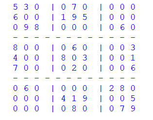

Hi everyone! Today I’ll show you how I coded a script that can solve every human solvable sudoku. I made this using Python with no libraries imported. The technique I am approaching this with is called backtracking, which consists in going on your way until something goes wrong. When that something goes wrong, you go back to your steps, change them, and try again. It might seem time consuming or not efficient but it is perfect for an algorithm like this and you will see why. Let’s get into it:
We are going to store our sudoku numbers in a 2D array in Python, so we have columns and rows coordinates. If you want you can easily add an input for the used to insert the numbers, but I just didn’t do that. Putting the sudoku in a 2D list would look something along these lines
As we are running this script with no GUI, all we are going to see are some numbers in the terminal that might look a bit confusing. That’s why I made a function that can re-write our sudoku in a clearer way. What this function does is splitting the sudoku in squares using “-“ and “|” for creating horizontal and vertical lines.
So now out sudoku looks something like this
If you are reading this I assume that you also learn how to play sudoku. But I am going to explain what the code does anyways
The first part checks if the number we are trying to enter I already present in the raw, or in the column
The second part checks if the number is present in the square
We can identify a certain box because we are doing an integer division in Python, and that means we won’t have any reminder. This allows us to have the some result when we divide the first 3 rows (all of the 3 will be 0 as the first row’s index is 0), the same result when we divide the rows from 3 to 6 (it will always make 1) and same for the rows from 6 to 9, allowing us to have 3 vertical zones. By doing the same with the columns we will have 9 zones, that we can refer to using coordinates like in the 2D array. The reason I add 3 to the box_y variable is because I will already have checked the squares in the first row, and it would be useless to check them again.
So if none of these cases are present, then we can return True.
This one is pretty simple and I think it doesn’t really need an explanation
Knowing when a number is valid and where to put it, we can proceed with the backtracking approach
We will try and put the first valid number in the empty square, but when we will find an error, we will then take that last square and equal it to 0 and keep trying with the next valid number, until eventually we will end up with solving the sudoku. This might seem a long process it will be just instant!